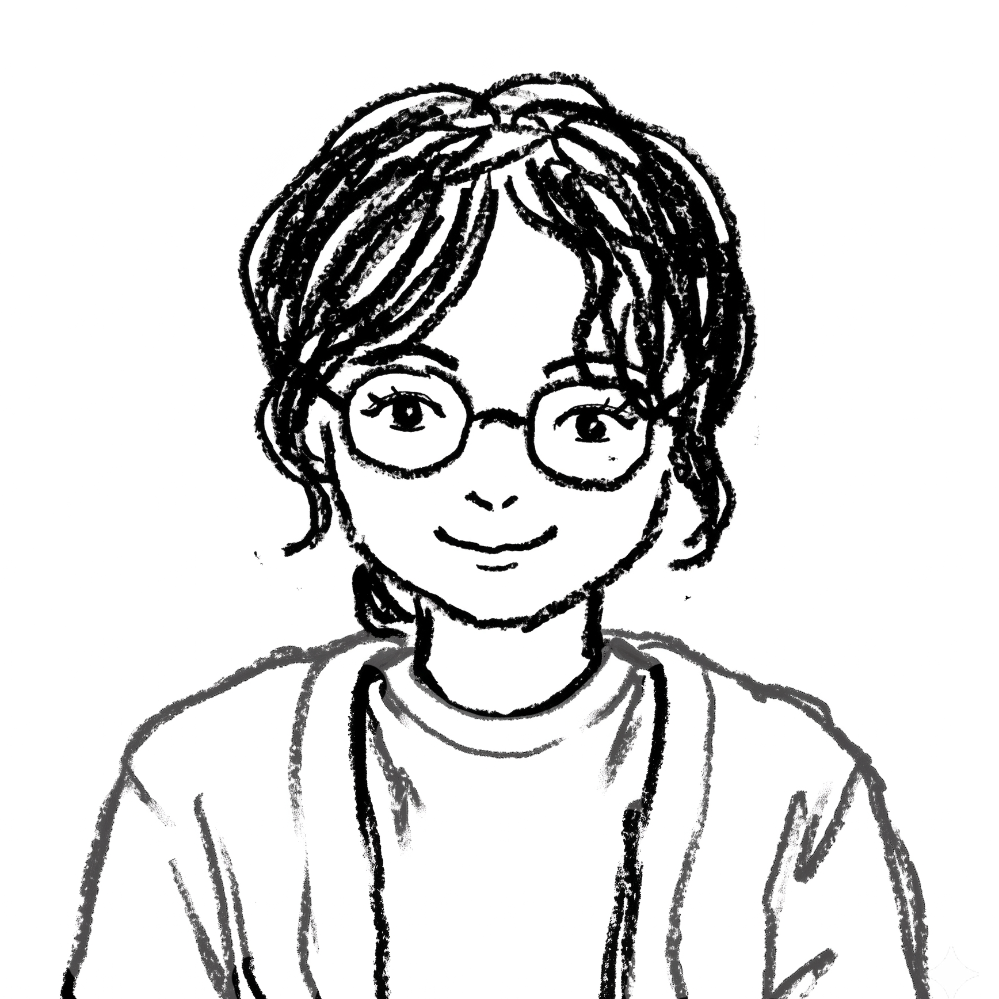

BUILT — 01
통계학을 전공했고, 원래 이런 도구 다루는 걸 좋아했습니다. 필요한 게 있으면 찾기보다 만들어보는 편이라, AI와 작업을 시작했습니다.
Discord에 메모를 던지면 자동으로 분류하고, 주간 단위로 우선순위까지 판단해주는 개인 기록 도구. 개인 가계부와 여러 사업자 장부를 하나로 합쳐 손익을 나누고 셀프 신고까지 관리하는 복식부기 도구도 만들었습니다.
2026 · PORTFOLIO
안녕하세요. 비개발자이고, AI와 함께 웹을 만들고 있습니다.
CONTACT
통계학을 전공했고, 원래 이런 도구 다루는 걸 좋아했습니다. 필요한 게 있으면 찾기보다 만들어보는 편이라, AI와 작업을 시작했습니다.
Discord에 메모를 던지면 자동으로 분류하고, 주간 단위로 우선순위까지 판단해주는 개인 기록 도구. 개인 가계부와 여러 사업자 장부를 하나로 합쳐 손익을 나누고 셀프 신고까지 관리하는 복식부기 도구도 만들었습니다.
쉬는 시간엔 스릴러·추리·범죄물을 봅니다.
불러오는 중...
메시지를 남겨주세요.